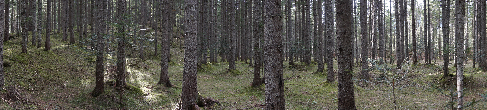
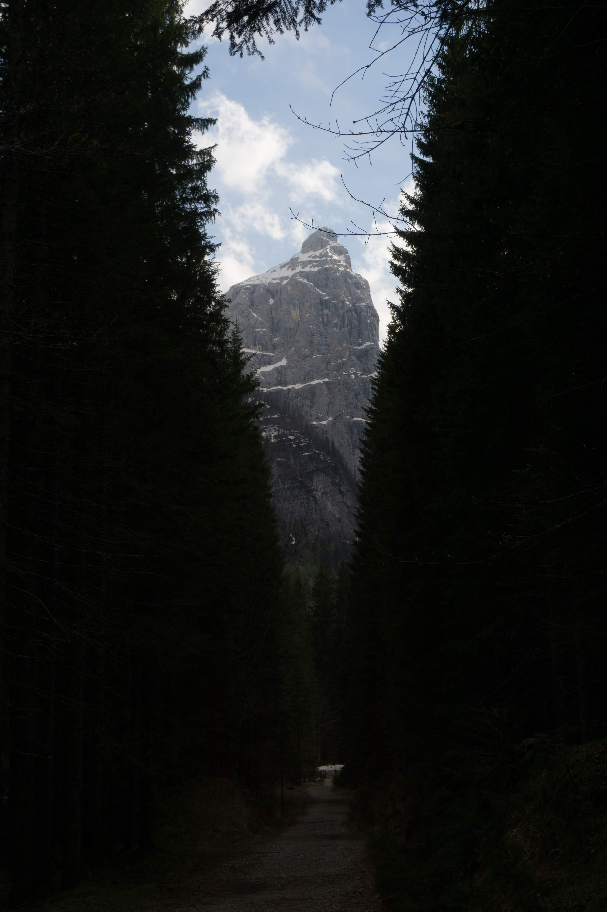
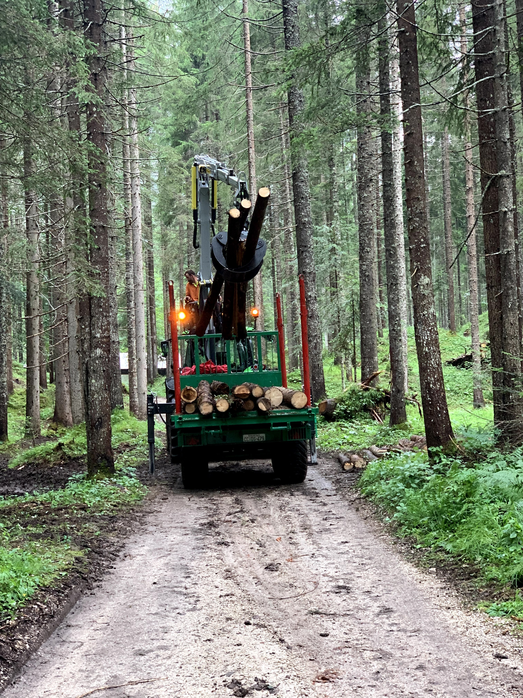
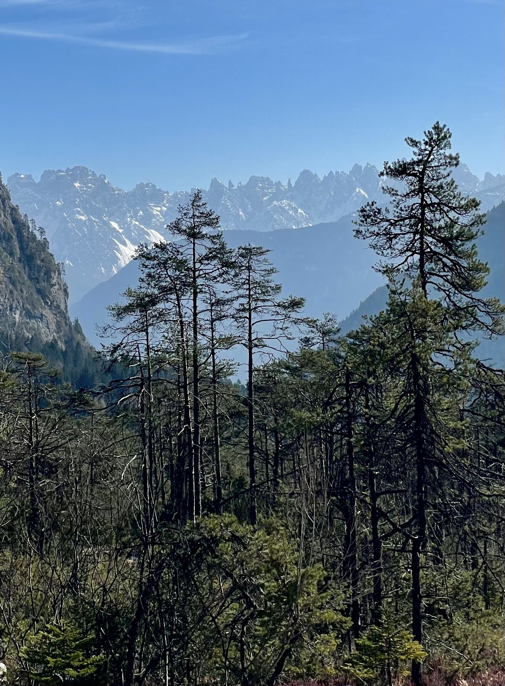
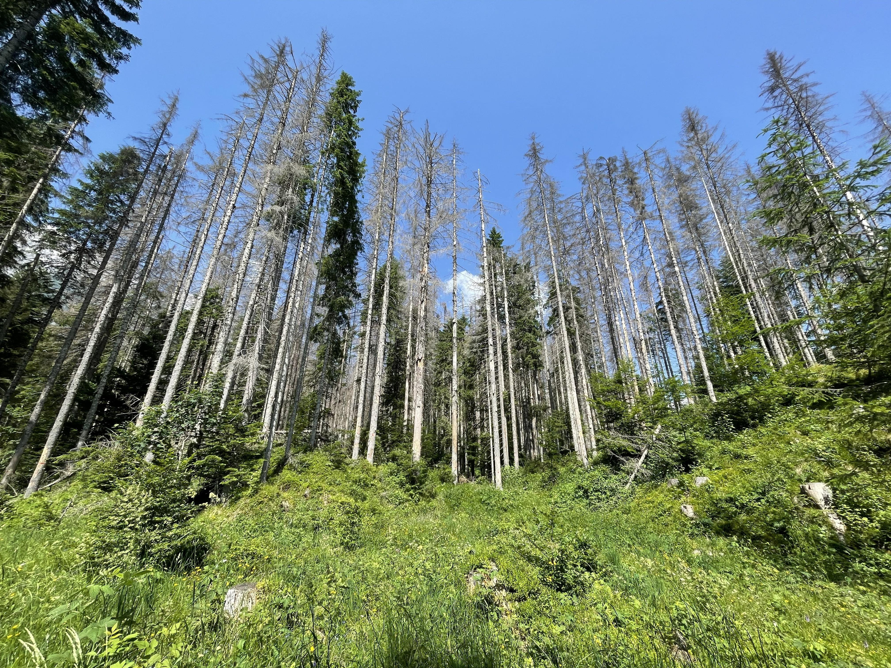

Un bosco sembra quanto di più naturale possa esserci. Ma anche un bosco ha una storia.
Emilio Sereni, nella Storia del paesaggio agrario italiano, ha mostrato come il paesaggio possa essere letto nel suo continuo «farsi»: coltivazioni e disboscamenti, bonifiche, sistemazioni del suolo, insediamenti, tecniche produttive. Il paesaggio non è soltanto lo sfondo sul quale si svolge la storia; è anche una delle forme nelle quali la storia rimane materialmente impressa.[1]
È uno sguardo che mi riporta alla vita materiale di Fernand Braudel. Prima e sotto le grandi vicende politiche ci sono uomini che devono costruire, riscaldarsi, produrre, commerciare, spostarsi, mangiare. Per farlo utilizzano ciò che il territorio offre e, nello stesso tempo, lo trasformano.
Anche il bosco alpino è, almeno in parte, un paesaggio costruito.
Gli alberi di San Marco
Il rapporto fra i boschi del Cadore e Venezia è antico e molto concreto.
Nel 1463 la Magnifica Comunità Cadorina donò la foresta di Somadida alla Serenissima Repubblica di Venezia, che aveva bisogno di legname pregiato adatto alle alberature delle proprie navi.[2] Non si cercava un legno qualsiasi: occorrevano alberi di grandi dimensioni e con caratteristiche tecnologiche adatte a una funzione molto precisa.
Ma non bastava scegliere e abbattere l'albero. Bisognava portarlo a Venezia.
I tronchi venivano condotti fino al sistema del Piave e da lì scendevano verso la pianura e la laguna. Le zattere erano quindi parte integrante dell'economia forestale veneziana: il bosco montano e l'Arsenale appartenevano a uno stesso sistema produttivo.
A Somadida ne rimane oggi una testimonianza particolarmente concreta: la ricostruzione in dimensioni naturali del Raso, una zattera lunga oltre trenta metri e costituita da tronchi di abete rosso, come quelle utilizzate per trasportare verso Venezia gli alberi destinati alla flotta della Serenissima.[3] È difficile trovare un'immagine migliore della vita materiale di Venezia: il bosco, l'albero scelto, il tronco, la zattera, il Piave, l'Arsenale, la nave.
La storia, però, è più interessante di una semplice storia di sfruttamento.
Nella gestione tradizionale cadorina il prelievo poteva avvenire attraverso il cosiddetto taglio cadorino o saltuario: gli alberi venivano scelti individualmente, mantenendo una struttura forestale diversificata per età e specie. Le esigenze dell'Arsenale avevano la precedenza e a Somadida si favorirono le resinose — abete rosso e abete bianco — a scapito delle latifoglie; ma la stessa gestione tendeva a evitare il denudamento del terreno e a garantire la rinnovazione naturale del bosco.[4]
È una distinzione importante.
Favorire una specie non significa necessariamente creare una monocoltura.
La foresta di Somadida, del resto, non è una monocoltura. Accanto all'abete rosso sono presenti l'abete bianco, il faggio e altre specie. Ma la loro semplice presenza non significa che abbiano avuto lo stesso peso nella struttura del bosco.
La documentazione forestale della Regione Veneto descrive proprio Somadida come una formazione nella quale la gestione del passato ha favorito soprattutto l'abete rosso. Il faggio è spesso relegato nel piano dominato, mentre la rinnovazione dell'abete bianco, pur presente, fatica talvolta ad affermarsi. Gli indirizzi selvicolturali indicano infatti fra gli obiettivi una maggiore partecipazione del faggio al piano dominante.[5]
È quanto avevo osservato camminando nella foresta. In alcuni settori i grandi fusti di abete rosso formavano una copertura fitta e quasi continua; gli abeti bianchi erano molto più rari e i pochi faggi, sotto quella copertura, disponevano di poca luce. Altrove, dove la luce riusciva a raggiungerli, avevo invece visto faggi svilupparsi fino a raggiungere l'altezza delle conifere.


Le fotografie non dimostrano la storia della foresta. Ma la documentazione forestale permette di leggere ciò che mostrano.
La documentazione disponibile consente di affermare che l'abete rosso è stato favorito dall'azione dell'uomo per le sue qualità tecnologiche.[6] Non consente invece, almeno per ora, di attribuire direttamente alla politica forestale della Serenissima le estese peccete monospecifiche e coetanee che troviamo in altre zone delle Alpi.
Rimane il fatto essenziale: ciò che oggi ci appare semplicemente come bosco porta anche l'impronta di secoli di scelte economiche e tecniche.
Il bosco e la guerra
Qualche secolo più tardi, una necessità completamente diversa trasformò nuovamente il paesaggio alpino.
Durante la Prima guerra mondiale il bosco fu terreno di combattimento, riparo, ostacolo e insieme materiale da costruzione. Gli alberi furono distrutti dai combattimenti o abbattuti; il legname serviva per trincee, ricoveri, baraccamenti, fortificazioni e infrastrutture militari.
Sull'Altopiano dei Sette Comuni la devastazione fu enorme.
Finita la guerra, occorreva ricostruire anche il bosco.
Ricostruire in fretta
Mario Rigoni Stern ha raccontato quella ricostruzione. Nelle grandi superfici devastate dalla guerra furono messe a dimora enormi quantità di abete rosso, o peccio.
La scelta aveva una sua logica. Bisognava ricostituire rapidamente il patrimonio forestale e l'abete rosso forniva un legname eccellente e di grande valore economico.
Ma il risultato furono anche boschi costituiti dalla stessa specie e da alberi della stessa età.
Molto prima di Vaia, Rigoni Stern criticò questa scelta. Non criticava l'abete rosso: metteva in discussione la fragilità di un bosco monospecifico e coetaneo rispetto a un ecosistema diversificato.
L'Università di Padova, presentando il progetto Bosco 800 realizzato dopo Vaia fra Asiago e Monte Zebio, ricorda esplicitamente come Rigoni Stern avesse criticato le modalità dei rimboschimenti effettuati sull'Altopiano dopo la Prima guerra mondiale, «quasi prevedendo» le conseguenze che quella gestione avrebbe mostrato in occasione della tempesta del 2018.[7]
È un passaggio importante perché impedisce una lettura troppo facile della storia.
Quelle scelte non erano necessariamente insensate. Rispondevano a un'urgenza reale e alle conoscenze e necessità economiche di quel momento.
Ma modificarono il bosco che le generazioni successive avrebbero ricevuto.
Vaia
Alla fine di ottobre del 2018 arrivò Vaia.
Venti di intensità eccezionale abbatterono milioni di alberi nelle Alpi orientali. Non tutti i boschi reagirono nello stesso modo: esposizione, terreno, intensità locale del vento, specie presenti, età, densità e struttura del popolamento concorsero a determinare gli effetti.
La stessa Regione Veneto, analizzando successivamente gli schianti, osserva che molte delle superfici distrutte erano costituite da boschi monospecifici e coetanei derivati da impianti del periodo postbellico. Precisa però anche che, davanti a venti di quella intensità, nessuna strategia selvicolturale avrebbe potuto garantire da sola la resilienza del bosco.[8]
È una cautela essenziale.

Dopo la tempesta anche l'intervento necessario per recuperare il legname e mettere in sicurezza il territorio modifica nuovamente il paesaggio. Il bosco che nascerà dopo Vaia sarà ancora il risultato dell'azione congiunta dei processi naturali e delle scelte dell'uomo.
Ma la differenza fra i boschi si può vedere anche nel paesaggio che conosco.


Le due fotografie non costituiscono una dimostrazione scientifica. Ma pongono una domanda.
Perché boschi relativamente vicini hanno reagito in modo tanto diverso?
La risposta non può essere una sola. Contano la forza e la direzione del vento, l'esposizione, il terreno, l'altitudine, le specie presenti, l'età e la struttura degli alberi.
Ma alcune di queste condizioni appartengono alla natura; altre sono anche il risultato della storia del bosco e delle scelte compiute dall'uomo.
Vaia è stata un evento naturale. La vulnerabilità del territorio sul quale si è abbattuta non era interamente naturale.
Dopo il vento, il bostrico
Vaia fu soltanto la prima parte della trasformazione.
La grande quantità di abeti schiantati, spezzati o indeboliti offrì condizioni eccezionalmente favorevoli al bostrico tipografo, Ips typographus.
Il bostrico non arrivò con Vaia. È un organismo naturalmente presente negli ecosistemi forestali italiani. In condizioni ordinarie colonizza soprattutto alberi indeboliti; dopo la tempesta trovò invece una quantità straordinaria di materiale fresco nel quale riprodursi e la sua popolazione entrò in una fase epidemica.[9]
La Regione Veneto individua fra i fattori di maggiore rischio proprio la presenza di peccete monospecifiche, la struttura monoplana del bosco, l'elevata densità e la presenza di schianti da vento o da neve.[10]
Il rapporto, dunque, non è:
monocoltura → Vaia → alberi caduti.
La storia è più complessa.
Un evento meteorologico eccezionale incontra un territorio composto da boschi differenti per specie, età, struttura e storia. Alcuni sono più vulnerabili di altri. Il vento produce a sua volta enormi quantità di alberi danneggiati; questi modificano le condizioni dell'ecosistema e favoriscono l'esplosione demografica del bostrico; l'insetto colpisce poi gli alberi sopravvissuti.
La natura produce l'evento. La storia contribuisce a determinarne gli effetti.
La natura non perdona?
Si dice spesso, dopo una catastrofe, che «la natura non perdona».
È un'espressione che non mi convince.
La natura non perdona e non condanna: non ha intenzioni. Un albero cade quando le sollecitazioni superano la sua resistenza; un versante cede quando viene meno il proprio equilibrio; un ghiacciaio fonde o diventa instabile quando cambiano le condizioni che ne determinano l'equilibrio; un insetto si moltiplica quando trova condizioni favorevoli.
Sono fisica, chimica, biologia.
La domanda riguarda piuttosto che cosa abbiamo messo davanti a quelle forze.
Nel corso dei secoli abbiamo selezionato specie forestali perché fornivano il legname di cui avevamo bisogno; abbiamo distrutto boschi durante le guerre e li abbiamo ricostruiti; abbiamo privilegiato specie e forme di gestione perché rispondevano alle necessità economiche del momento.
Ogni scelta aveva ragioni comprensibili nel proprio tempo.
Ma ogni scelta modificava anche il territorio sul quale avrebbero agito gli eventi successivi.
Una questione che va oltre il bosco
Lo vediamo oggi su una scala molto più grande.
Nell'agosto 2026 il collasso di una massa glaciale nell'Himalaya ha innescato in Nepal una catastrofica successione di ghiaccio, roccia, detriti e acqua. Gli scienziati stanno ancora ricostruendo l'evento e non sarebbe corretto ridurlo a una sola causa; il rapido riscaldamento e la perdita di massa glaciale dell'Himalaya costituiscono però il contesto nel quale questi fenomeni stanno diventando più pericolosi.[11]
Il problema diventa allora anche politico: popolazioni che hanno contribuito pochissimo all'accumulo storico dei gas serra possono trovarsi esposte ad alcune delle conseguenze più gravi del cambiamento climatico.
E non occorre andare sull'Himalaya.
Nell'estate del 2026 il ghiacciaio di Planpincieux, sul Monte Bianco, ha raggiunto velocità di spostamento superiori agli ottanta centimetri al giorno, rendendo necessarie evacuazioni e limitazioni all'accesso della Val Ferret.[12] Anche qui sarebbe semplicistico attribuire ogni movimento del ghiacciaio direttamente al cambiamento climatico: morfologia, substrato, acqua e dinamica propria del ghiacciaio concorrono al fenomeno.
Ma sarebbe altrettanto fuorviante considerare il rapido mutamento dell'ambiente glaciale alpino come uno scenario indipendente dal riscaldamento in corso.
Il punto non è cercare un colpevole per ogni evento naturale.
È distinguere l'evento, la vulnerabilità e la responsabilità.
Il tempo del bosco
È qui che ritorna Sereni.
Il paesaggio non è semplicemente natura e non è semplicemente opera dell'uomo. È il luogo nel quale natura e storia si sovrappongono, lasciando tracce che possono durare molto più a lungo delle ragioni che le hanno prodotte.
E ritorna Braudel.
Dietro il bosco ci sono il legname e le navi, le guerre e le ricostruzioni, il lavoro e il commercio: quella vita materiale che scorre sotto gli avvenimenti e li rende possibili.
Venezia aveva bisogno di alberi adatti alle proprie navi. Dopo la Grande Guerra bisognava ricostituire rapidamente le foreste devastate. Le comunità di montagna avevano bisogno di un legname utile e commerciabile.
Ma gli alberi crescono in decenni e un bosco acquista la propria struttura in tempi ancora più lunghi. Ciò che una generazione decide viene consegnato alle successive.
La corteccia di abete rosso sulla quale Antonio appoggia la sua battuta di manzo appartiene, inaspettatamente, anche a questa storia.
La natura segue le proprie leggi.
La responsabilità dell'uomo sta anche nel modo in cui trasforma il territorio sul quale quelle leggi agiranno.
E il tempo del bosco è molto più lungo del tempo delle nostre convenienze.
Note
[1]Emilio Sereni, Storia del paesaggio agrario italiano, Laterza, 1961. Sul ruolo dell'opera di Sereni nella lettura storica del «farsi» del paesaggio italiano, cfr. Treccani, Della grande trasformazione del paesaggio.↩
[2]Comune di Auronzo di Cadore, Foresta di Somadida: nel 1463 la Magnifica Comunità Cadorina donò la foresta alla Serenissima per il «legname pregiato adatto all'alberatura delle navi». Foresta di Somadida — Comune di Auronzo di Cadore↩
[3]Carabinieri Biodiversità, documentazione sulla ricostruzione della storica zattera veneziana Raso nella Riserva naturale orientata di Somadida. La ricostruzione, lunga oltre trenta metri, riproduce le zattere utilizzate per il trasporto dei tronchi di abete rosso destinati alle alberature della flotta veneziana. La stessa fonte ricorda la denominazione storica di Somadida come «Bosco degli alberi di S. Marco».↩
[4]Club Alpino Italiano, Commissione Scientifica Centrale, documentazione sulla flora e sulla gestione di Somadida. La scheda descrive il taglio cadorino o saltuario, il mantenimento di un bosco diversificato per età e specie e, contemporaneamente, il favore accordato inizialmente alle resinose — abete rosso e abete bianco — rispetto alle latifoglie per le esigenze dell'Arsenale. È un riscontro particolarmente importante perché impedisce di confondere la selezione veneziana delle specie con la moderna monocoltura. Somadida: flora e taglio cadorino — CAI↩
[5]Regione del Veneto, documentazione sulle tipologie forestali del Veneto, Abieteto dei substrati carbonatici. Somadida-Auronzo è indicata fra le località caratteristiche. La scheda rileva gli effetti della gestione passata, che ha favorito soprattutto l'abete rosso; segnala il faggio spesso relegato nel piano dominato e le difficoltà che può incontrare la rinnovazione dell'abete bianco, indicando fra gli indirizzi gestionali una maggiore partecipazione del faggio al piano dominante.↩
[6]La documentazione territoriale sulla foresta registra esplicitamente la prevalenza dell'abete rosso alle quote inferiori e precisa che la specie «è stata da sempre favorita dall'azione dell'uomo».↩
[7]Università degli Studi di Padova, Bosco 800. L'Ateneo collega espressamente il progetto post-Vaia alla riflessione di Mario Rigoni Stern sui rimboschimenti dell'Altopiano dei Sette Comuni successivi alla Prima guerra mondiale.
Bosco 800 — Università di Padova↩
[8]Regione del Veneto, Monitoraggio degli schianti da vento della tempesta Vaia. La Regione osserva che molte superfici distrutte erano boschi monospecifici e coetanei derivanti da impianti postbellici, ma sottolinea contemporaneamente l'eccezionalità dei venti e l'impossibilità di considerare qualsiasi strategia selvicolturale garanzia assoluta di resilienza.
Monitoraggio degli schianti di Vaia — Regione del Veneto↩
[9]Regione del Veneto, Bostrico. Dopo Vaia si è sviluppata quella che la Regione definisce la più ampia infestazione di bostrico tipografo osservata sulle Alpi meridionali; gli alberi sopravvissuti risultavano vulnerabili sia per l'indebolimento sia per l'elevata pressione dell'insetto nella fase epidemica.↩
[10]Servizio fitosanitario della Regione del Veneto, Bostrico tipografo. Fra i fattori predisponenti delle aree a maggior rischio sono indicati peccete monospecifiche, struttura monoplana, densità elevata, stress idrico e presenza di schianti. La stessa fonte precisa che Ips typographus è naturalmente presente negli ecosistemi forestali italiani.
Bostrico tipografo — Regione del Veneto↩
[11]Per l'evento himalayano dell'agosto 2026: Reuters ricostruisce il collasso di ghiaccio e roccia e segnala il possibile ruolo delle temperature crescenti e della perdita di massa glaciale, precisando che la ricostruzione causale resta complessa.↩
[12]Per Planpincieux: nel luglio 2026 le autorità hanno registrato uno spostamento medio superiore a 80 cm al giorno, mantenendo evacuata la zona rossa e regolamentando l'accesso alla Val Ferret.↩